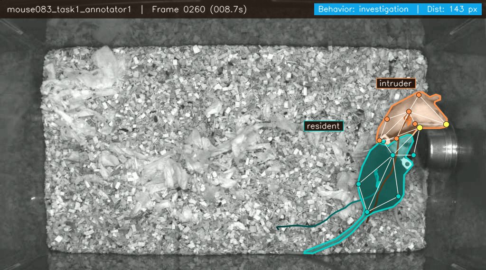

DINOv3 Keypoint Tracking¶
DINOv3 Keypoint Tracker propagates manually labeled body-part points through a video without training a pose-estimation model for the target dataset. It uses frozen DINO-family patch descriptors for appearance matching, a local motion-prior search, optional mask constraints, stateful track memory, and Lucas-Kanade pixel refinement for sub-patch motion.
This backend is a sparse-label accelerator. It is useful when you need reviewable keypoint trajectories from a few manual seed frames. It is not a new DINO model, and it is not a replacement for supervised pose estimation when you need a reusable model trained across many videos, camera setups, or animals.

For an end-to-end worked example combining whole-animal instance polygons with 14 anatomical keypoints (nose, left_ear, right_ear, neck, left_hip, right_hip, tail_base per mouse), see the Resident-Intruder Walkthrough (mouse083_task1_annotator1).
When To Use It¶
Use DINOv3 Keypoint Tracker when:
- you have a video-specific tracking job and want to avoid dense manual keypoint labeling;
- the same landmarks are visible across nearby frames;
- you can review and correct occasional drift;
- masks or polygons are available, or the local appearance around each keypoint is distinctive enough to track without masks.
Use a pose-estimation workflow instead when:
- you need a reusable model for many unseen videos;
- the animal undergoes large viewpoint changes not represented by the seed frames;
- you need high-throughput inference after a labeled training set is already available;
- you need benchmarked pose-model outputs rather than per-video reviewed propagation.
What It Tracks¶
The tracker starts from saved LabelMe-compatible Annolid annotations:
pointshapes become named keypoints to track;polygonor mask shapes are optional but recommended because they constrain ambiguous points to the instance;- a plain point without instance metadata is associated via matching
group_idfirst and otherwise with the single polygon that contains it, while explicitinstance_labelmetadata always wins; - occluded keypoint visibility (
kp_visibility/kp_visible) is preserved across reads and writes; - later manually corrected frames act as new seed anchors, and restarting tracking after an already-tracked segment automatically resumes state from the latest persisted frame while keeping manual appearance anchors.
For multi-animal videos, avoid repeated plain point labels such as nose with
no instance or group_id context. Annolid disambiguates same-class polygons
with distinct group_id values (for example two mouse polygons with
group_id 0 and 1) while preserving their saved polygon labels and
group_ids across round-trips, alongside instance_label and display_label
flags. Same-named points with distinct instance or group_id metadata remain
separate when saving predictions or rerunning tracking. In scripted LabelMe
JSON, set group_id or instance_label/display_label explicitly for each
point; in the GUI, check the saved frame before a long run to confirm the point
belongs to the intended animal. In the GUI, placing a point inside overlapping
polygons automatically binds it to the selected polygon, the only containing
polygon still missing that landmark, or the polygon chosen in the owner prompt.
When plain points fall inside overlapping or concentric polygons on disk,
Annolid resolves ownership deterministically via instance prefixes, landmark
uniqueness, anchored pose clusters / non-overlapping mask cores, temporal
continuity from prior or neighboring frames, and nested concentric scale /
interior-depth geometry when one polygon is strictly nested inside a larger
one. If a single isolated frame still has identical or nearly equal overlapping
polygons with no instance or temporal cue, the GUI offers to jump directly to
that frame before starting tracking, annolid-run track-qc <result_dir> --strict
flags ambiguous_keypoint_ownership (exit code 2), and programmatic callers
can configure CutieDinoTrackerConfig(ambiguous_point_policy=...) ("withhold"
by default, "error" to raise AmbiguousKeypointError immediately, or
"polygon_order" for deterministic declaration-order tie-breaking on legacy
exports).
Keep display labels stable across frames and animals. Labels such as nose,
leftear, rightear, tail_base, fore_top, or abdomen_bot should mean the
same anatomical point every time.
How The Backend Works¶
The implementation separates the feature backbone from the tracker logic:
annolid/features/dino_models.pydefines the supported DINOv3, DINOv2, GoogleEmbeddingGemma 2, GoogleSigLIP 2, on-deviceMobileNetV4/MobileNetV3, and RADIO-compatible feature backbones.annolid/features/dinov3_extractor.pyandannolid/features/google_vision_extractor.pyload the selected Hugging Face,timm, ortorchvisionbackbone, select CPU, CUDA, or MPS, snap image sizes to patch/stride multiples, handle modality-selective loading (including directsafetensorsvision-tower loading when a cached checkpoint's nestedvision_config.model_typeis registered intransformers), project multimodal vision tokens into the aligned embedding space before Matryoshka channel truncation (embedding_matryoshka_dim), and return normalized dense patch grids (plus optional Gaussian-vignetted crop embeddings viaembed_keypoint_regions).annolid/tracking/gaussian_region.py,annolid/tracking/dino_keypoint_types.py,annolid/tracking/overlap_assignment.py, andannolid/tracking/video_seed_utils.pydefine mask-aware Gaussian region descriptors, sub-patch continuous Gaussian sampling, drift-free rotation-tolerant Gaussian pixel-region ZNCC template banks with 2D Hessian sub-pixel refinement, tracker state structures, overlapping-polygon point disambiguation, and shared seed/resume frame orchestration across keypoint processors.annolid/tracking/dino_keypoint_tracker.pyturns those patch grids into stateful point tracks.
Each manual point initializes a track with its current descriptor, reference descriptor, manual-anchor codebook, optional Gaussian-weighted pixel/gradient template, appearance codebook, support probes, velocity, quality state, and optional structural or symmetry state. On each new frame, Annolid:
- extracts the current dense feature grid;
- optionally debiases coordinate-correlated feature responses and builds mask-aware Gaussian regional descriptors around each instance so contour landmarks (nose, ears, paws, tail) integrate foreground neighborhood context without background bleed;
- estimates the current point from batched per-point pyramidal Lucas-Kanade flow, lazily computing dense Farneback flow only if per-point LK is unavailable, and falling back to previous velocity when neither flow observation is valid;
- searches a bounded candidate region around the motion prior;
- scores candidates with vectorized feature similarity, appearance/context/support evidence, mask or structure priors, backward consistency, and a motion penalty;
- resolves one-to-one assignments so two tracks do not claim the same best candidate;
- refines sub-patch coordinates with connected similarity peaks, Lucas-Kanade optical flow, and optional drift-free Gaussian-weighted pixel/gradient ZNCC template matching anchored to the manual seed;
- updates descriptors (optionally sampled continuously at sub-patch coordinates), velocity, quality, support probes, and output annotation metadata.
This split matters in practice: DINO descriptors provide robust coarse appearance correspondence, while optical flow handles small movements inside a 16-pixel ViT patch.
Requirements¶
Install Annolid with GUI, model, and tracking dependencies:
pip install "annolid[gui,ml,tracking]"
For a local checkout, use the repository environment:
source .venv/bin/activate
pip install -e ".[gui,ml,tracking]"
The one-line installer default gui profile also installs the model and
tracking extras used by this workflow. The first DINOv3 run may need Hugging
Face access. For gated DINOv3 checkpoints, accept the model license on Hugging
Face and authenticate once:
hf auth login
You can also set HF_TOKEN in the active environment. To use a shared local
Hugging Face cache:
export DINOV3_LOCATION=/path/to/hf-cache
The optional RADIO backbone requires open-clip-torch; choose a DINOv2 or
DINOv3 backbone if that package is not installed.
Choose A Feature Backbone¶
Open Tools -> Advanced Parameters -> Tracker -> DINO feature model and pick a model. The default is the small DINOv3 ViT-S/16 checkpoint because it is the best starting point for interactive tracking.
Common choices:
| Model | Best use |
|---|---|
facebook/dinov3-vits16-pretrain-lvd1689m |
Default interactive tracking; fastest DINOv3 option. |
facebook/dinov3-vits16plus-pretrain-lvd1689m |
Slightly stronger small DINOv3 descriptors. |
facebook/dinov3-vitb16-pretrain-lvd1426 |
Medium offline runs when ViT-S is not distinctive enough. |
facebook/dinov3-vitl16-pretrain-lvd1689m |
Higher-memory offline runs. |
google/embeddinggemma-2 |
Open lightweight 170M vision tower (768d with 512/256/128 Matryoshka dims; selective tower loading in bfloat16/float32; requires transformers>=5.19). |
google/siglip2-base-patch16-224 or google/siglip2-so400m-patch16-384 |
Open dense ViT/16 vision encoders with dynamic position interpolation. |
timm/mobilenetv4_conv_small.e2400_r224_in1k or torchvision/mobilenet_v3_small |
Fast on-device stride-8 multi-scale CNN pyramids (2x finer spatial grid than 16px ViTs) for low-latency CPU/MPS runs. |
facebook/dinov2-base or facebook/dinov2-large |
Open fallback when DINOv3 access is unavailable. |
nvidia/C-RADIOv4-SO400M |
Compatible feature backbone for specialized workflows. |
List the supported catalog from the active environment:
annolid-run dinov3-models --list
Pre-download or verify a model before opening the GUI:
annolid-run dinov3-models --model facebook/dinov3-vits16-pretrain-lvd1689m
annolid-run dinov3-models --local-files-only --model facebook/dinov3-vits16-pretrain-lvd1689m
GUI Workflow¶
- Open a video in Annolid.
- Navigate to a frame where the landmarks are visible and sharp.
- Add
pointlabels for the keypoints you want to track. - For multi-animal videos, verify that each point has the intended instance association before starting a long run.
- Add polygons or masks for the animal instances when available.
- Save the annotation for that frame.
- Open Tools -> Advanced Parameters -> Tracker.
- Choose DINO feature model and, if useful, a Tracker preset.
- Select DINOv3 Keypoint Tracker from the model dropdown.
- Click the prediction button to track from the current frame.
- Review the generated JSON files, correct drift, save the corrected frame, and rerun from that frame when needed.
For long videos, validate a short difficult segment first. Confirm that the tracked points survive crossings, occlusions, and fast motion before processing the full recording.
Presets And Important Parameters¶
The tracker exposes presets through Tools -> Advanced Parameters -> Tracker:
| Preset | Use |
|---|---|
fly_70fps_keypoints |
Small, fast motions such as high-frame-rate fly keypoints. Uses tight search, positional debiasing, backward consistency, coherent peak refinement, support probes, context descriptors, and a small Lucas-Kanade window. |
rodent_30fps_occlusions |
Larger animal motion and occlusions. Uses wider search, stronger mask/structure support, larger appearance bundles, more support probes, and a larger Lucas-Kanade window. |
Key settings:
- DINO feature model and Embedding Matryoshka dim: select the frozen
feature backbone and optional prefix truncation (
768,512,256,128) for Matryoshka-trained models such asgoogle/embeddinggemma-2(the dialog displays live runtime readiness viacheck_dino_model_runtime_support). When switching to a non-Matryoshka backbone (DINOv3,SigLIP 2,MobileNet),embedding_matryoshka_strict_mrl=True(default) safely keeps the full descriptor channels; programmatic callers that explicitly setembedding_matryoshka_strict_mrl=Falseget deterministic row-orthonormal compression so all channels and multi-scale CNN stages remain represented. - Gaussian region radius / sigma and Sub-patch continuous Gaussian sampling:
aggregate a mask-aware Gaussian patch neighborhood (
region_descriptor_radius,region_descriptor_sigma,region_descriptor_blend,region_descriptor_mask_aware) and sample descriptors at continuous sub-patch coordinates (region_subpatch_sampling) instead of snapping to integer patch cells. - Drift-free Gaussian pixel template refinement: anchors a zero-mean,
unit-weighted-norm multi-orientation Gaussian intensity + signed-Sobel ZNCC
template bank around manual seed points (
pixel_region_refine_enabled,pixel_region_window,pixel_region_sigma,pixel_region_search_radius_px,pixel_region_weight,pixel_region_num_orientations=12) guided by 2D Procrustes constellation rotation and 2D Hessian sub-pixel peak fitting so small frame-to-frame optical-flow errors do not accumulate even across large in-plane animal turns. - Clamp keypoints to instance mask and Mask snap radius: keep points
inside the selected instance when masks are available. Patch masks are
quantized via area occupancy (
cv2.INTER_AREA) so thin appendages (tail_mid,tail_tip, paws) remain represented on the ViT grid, cross-instance foreground masks exclude candidates that land strictly inside another animal during close huddling, and sudden partial mask truncation falls back safely without dropping well-supported skeletal points. - Occluded seed keypoint handling: seed points marked occluded
(
kp_visibility = 1/kp_visible = false) do not pollute manual anchor codebooks or pixel templates with the occluding surface; they inherit clean descriptors from visible homologous landmarks when available, follow 2D Procrustes constellation motion while occluded without stealing active sibling patches, and re-acquirevisible = trueonly when emerging at a distinct, well-supported anatomical position. - Elongated ROI token cap and accelerator memory resilience:
Dinov3Config(max_long_side=1408)preserves fullshort_side=768resolution on standard4:3and16:9frames while bounding ViT token count on wide multi-animal band crops; bothDinov3FeatureExtractorandCutieMaskManagerautomatically flush accelerator memory and migrate to CPU if CUDA/MPS runs out of memory mid-video. - Search tighten, Velocity gain, Flow gain, and Min/Max radius: control the local motion-prior search.
- DINOv3 positional debias: suppresses coordinate-correlated feature responses that can pin points to image locations.
- DINOv3 backward consistency: prefers candidates that map back to the previous feature location.
- Coherent peak refinement: refines around the connected similarity peak instead of unrelated nearby peaks.
- Pixel refinement: the tracker presets configure Lucas-Kanade sub-patch
correction; programmatic callers can tune its blend weight, window size,
error threshold, and max jump through the
pixel_refine_*runtime fields. - Symmetry pairing: active
PoseSchemasymmetry pairs (including inferred left/right landmark pairs such asleft_forepaw/right_forepaw) are automatically registered per animal instance to discourage left/right swaps. - Multi-animal assignment and kinematic constraints: programmatic callers
can enable
tracking_enable=Trueto activate Hungarian global candidate assignment (tracking_matcher_algorithm="hungarian"), per-frame velocity gating (tracking_constraint_max_velocity_px), skeletal limb-stretch bounds (tracking_enforce_skeletal_constraints,tracking_constraint_limb_std_multiplier), instance centroid/pose/size penalties, and occlusion template reset (tracking_instance_dropout_timeout_frames). - Trajectory post-smoothing: programmatic callers can enable optional
confidence-gated
one_euro,ema, or innovation-gatedkalmanpost-smoothing viatracking_smoother_enable,tracking_smoother_mode, and thetracking_smoother_*runtime fields. - Ambiguous point policy: programmatic callers can set
ambiguous_point_policyonCutieDinoTrackerConfig("withhold"default,"error"fail-fastAmbiguousKeypointError, or"polygon_order"declaration-order tie-breaking).
Outputs And Review Contract¶
DINOv3 Keypoint Tracker writes LabelMe-compatible JSON files into the standard Annolid result folder:
<video_name>/<video_name>_000000001.json
<video_name>/<video_name>_000000002.json
...
Predicted point shapes keep their labels and include tracking metadata such as backend description, quality, velocity, miss count, display label, and instance label. The tracker itself does not write a summary CSV; export or summarize the reviewed JSON files through the usual Annolid analysis tools after corrections are complete.
The recommended correction loop is:
- run tracking from a clean seed frame;
- inspect the first frame where a keypoint drifts or swaps;
- correct the point manually and save that frame;
- rerun tracking from the corrected frame;
- keep corrections as sparse reseed frames rather than relabeling every frame.
At a correction frame, a saved manual polygon takes precedence over the previous tracked mask. When the correction contains only points, the previous mask is reused for that instance when available.
Choosing Among Point And Mask Backends¶
| Backend | Use it when |
|---|---|
| DINOv3 Keypoint Tracker | You want sparse, named keypoint propagation with reviewable LabelMe outputs and optional masks. |
| TAPNext (ONNX) | You want an ONNX point tracker with fixed model assets and no DINO/Hugging Face feature backbone. See TAPNext ONNX Point Tracking. |
| CoTracker | You want joint point tracking through a chunk using the official CoTracker model. |
| CoWTracker | You want an alternative dense/windowed point tracker and can install the optional runtime. See CoWTracker Point Tracking. |
| YOLO pose or DinoKPSEG | You want a trainable pose/keypoint model for repeated inference on future videos. |
| INSID3 Video | You want DINOv3 in-context segmentation masks, not direct point tracking. Masks from segmentation workflows can still help constrain keypoints. |
| Cutie or SAM3 | You need masks or polygons rather than point trajectories. See SAM3 for SAM3 tracking and correction. |
Programmatic Use¶
from annolid.tracking.configuration import CutieDinoTrackerConfig
from annolid.tracking.dino_keypoint_tracker import DinoKeypointVideoProcessor
runtime = CutieDinoTrackerConfig.from_preset(
"rodent_30fps_occlusions",
patch_model_name="facebook/dinov3-vits16-pretrain-lvd1689m",
)
processor = DinoKeypointVideoProcessor(
video_path="/path/to/video.mp4",
result_folder=None,
model_name="facebook/dinov3-vits16-pretrain-lvd1689m",
short_side=768,
device=None,
runtime_config=runtime,
)
processor.process_video()
The processor reads the saved seed annotation from the video result folder, tracks forward, and writes per-frame JSON outputs.
Troubleshooting¶
| Problem | What to check |
|---|---|
No manual PNG+JSON seed pairs found |
Save a labeled seed frame in the video result folder before starting tracking. |
| DINOv3 model download fails | Accept the gated model license, run hf auth login, set HF_TOKEN, or choose an open DINOv2 fallback. |
| RADIO model import fails | Install open-clip-torch or switch back to a DINO-family feature model. |
| Model dropdown uses the wrong DINO backbone | Reopen Tools -> Advanced Parameters -> Tracker, confirm DINO feature model, and check the log for the resolved model id. |
| Points snap to the same image location | Enable DINOv3 positional debias and reduce search radius if motion is small. |
| Small joints appear stuck inside one patch | Keep pixel refinement enabled and use the fly preset or a smaller Lucas-Kanade window. |
| Left/right landmarks swap | Add masks when possible, keep labels consistent, add more anchor points, and configure symmetry pairs in scripted workflows. |
| Tracking drifts after occlusion | Correct the first bad frame, save it, and rerun from that correction frame. |
| CPU runs are slow | Use CUDA or MPS when available, reduce short_side, validate short segments first, and pre-download the model before long runs. |
Two-Mice 3D Simulation Dataset & Tracking Evaluation¶
To generate deterministic multi-scenario two-mouse .mp4 videos, 3D depth-buffered
instance/body-part masks, LabelMe JSONs, COCO pose + tracking splits, and
side-by-side ground-truth vs. tracked diagnostic videos:
source .venv/bin/activate
python scripts/generate_two_mice_keypoint_tracking_eval.py --tag eval
Outputs are written under output/two_mice_keypoint_tracking_eval/ (pass
--generate-only to export the videos and ground-truth dataset without running
model inference, or --skip-generate to re-benchmark against existing sequences).